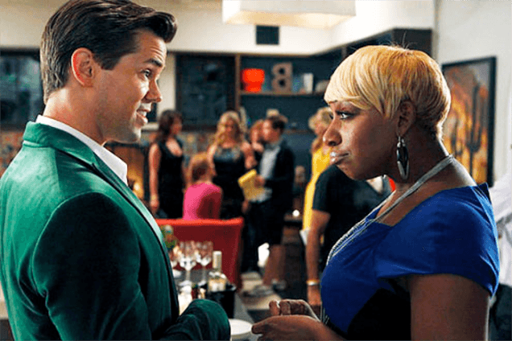
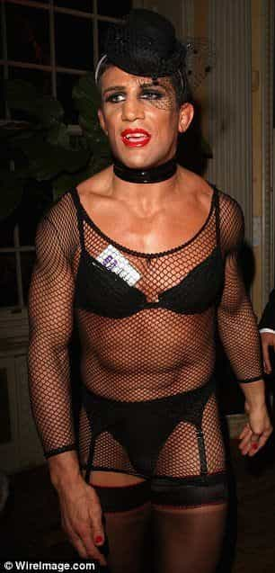

< < < Back
UK Feminists Ban Clapping At Conference Because It Triggers Anxiety – Return Of Kings
At a National Union of Students (NUS) Women’s conference in London this week, delegates were asked to refrain from applauding and use “jazz hands” instead. The request, which appeared on the Twitter feed of the Oxford University Student Union’s Women’s Campaign, was made because clapping was “triggering anxiety” amongst some conference members.
The same conference also passed a motion condemning drag and cross dressing, while another motion attacked gay men who speak like black women. Are these manifestations just self-indulgences of affluent human detritus, or do they represent a wider trend of censorious authoritarianism in people who will one day be ruling over Britain’s town halls and corporate offices?
There is a growing problem of gay white men appropriating black women
The whole cretinous spectacle was precipitated by a couple of tweets by the NUS Women’s Campaign. First:
‘Whooping is fun for some, but can be super inaccessible for others, so please try not to whoop! Jazz hands work just as well.
Then:
Some delegates are requesting that we move to jazz hands rather than clapping, as it’s triggering anxiety. Please be mindful! #nuswomen15′.
Following a reaction of general ridicule, student-political apparatchicks piled in to defend the policy. Nona Buckley-Irvine, General secretary (no less) of the London School of Economics Students’ Union, unloaded both barrels:
Jazz hands are used throughout NUS in place of clapping as a way to show appreciation of someone’s point without interrupting or causing disturbance, as it can create anxiety.
Presumably a room-full of feminists spacking out like Al Jolson is not something that can cause anxiety. Another important point made by blogger Gareth Soye, who suffers from a real anxiety disorder, is that indulging sufferers of anxiety in their wish to avoid the anxiety trigger does harm by allowing them to avoid confronting their condition and learning to live with it.
LSE SU women’s officer Gee Linford-Grayson (notice the theme of double-barreled surnames?) added:
As someone who is new to the NUS conference culture it surprised me at first, but actually within a few rounds of jazz hands applause it began to make a lot of sense, as loud clapping and whooping can be intimidating and distracting when you’re speaking on stage.
That’s right, loud clapping and whooping can be intimidating and distracting to public speakers. People who have presumably put themselves forward on campus and then been elected as student representatives are intimidated by the sound of clapping and whooping of public meetings. As Richard Littlejohn would put it, you couldn’t make it up.
Fancy dress is “Transphobic”
MMA fighter Alex Reid would presumably be denied the right to dress in drag.
To add to the lunacy, the NUS conference was also host to equally absurd motions condemning dressing in drag and telling gay white men to stop “appropriating” black women. The motion against drag was passed, the reasoning behind it being that “Transphobic fancy dress should be met with the same disdain with which we meet other prejudiced or appropriative costumes”.
It requires NUS events to ban crossdressing, but only for “cisgender” participants. Drag will be tolerated, however, as an “expression or exploration of queer identity.” Deviant Privilege, you might call it.
Here is part of second motion, which was also passed:
The appropriation of Black women by white gay men is prevalent within the LGBT scene and community. This may be manifested in the emulation of the mannerisms, language (particularly AAVE- African American Vernacular English) and phrases that can be attributed to Black women. White gay men may often assert that they are ‘strong black women” or have an “inner black woman’.
It turns out not all oppressed minorities are equal, as:
White gay men are the dominant demographic within the LGBT community, and they benefit from both white privilege and male privilege.
It’s always fun to watch the Oppression Olympics unfold and the oppressed cannibalise each other. One thing that is unclear, however, is how exactly the “appropriation of black women” will be “eradicated” from the behaviour of white gays at NUS conferences. Presumably some burly enforcers will walk around looking for gay white men assuming the mannerisms of black women and then eject them in the name of “equality.”
Oxford University: viper’s nest
The revelation that the original complaint that clapping was “causing anxiety” originated from the Twitter feed of the Oxford University Student Union’s Women’s Campaign, which will come to no surprise to those familiar with the cabaret of attention-seeking that is UK student politics.
The august institution has just been given a “red\” ranking in a study into freedom of speech by Spiked Magazine. This means that Oxford is “hostile to free speech and free expression.” The University’s resident Equality and Diversity seat-warmer, Trudy Coe, defended their “harassment” policy:
…the University does not tolerate any form of harassment or victimisation. … It is committed to fostering an inclusive culture which promotes equality, values diversity and maintains a working, learning and social environment in which the rights and dignity of all members of the University community are respected.”
“Ms” Coe was at pains to point out that academic debate was OK as long as it was done: “without violating the dignity of others or creating an intimidating, hostile, degrading, humiliating or offensive environment.”
My uterus is not up for debate
One example of just how low the bar stands for judging an environment “intimidating, hostile, degrading, humiliating or offensive” at Oxford is the abortion debate debacle at Christ Church college. Two male speakers were due to have a debate about abortion from either side of the pro-life and pro-choice debate.
Feminists started agitating against the event, accusing the organisers and participants of using “really sh*tty anti-choice rhetoric and probs some cissexism.” There was outrage at the prospect of two people who “do not have uteruses” debating the subject of abortion, which local rabble-rousers claimed would “threaten the mental safety” of attendees. Threaten the mental safety!
With typical British institutional gutlessness, Christ Church called off the debate, citing “security and welfare issues.” The ringleader behind the banning of the debate penned an obnoxious, rambling screed in the Independent celebrating the silencing of two speakers whose “words and views might hurt women.”
The nonsensical Orwellianisms flowed thick and fast, with Niamh McIntyre in the same breath boasting “I helped shut down an abortion debate between two men because my uterus isn’t up for their discussion” and in another, pleading she “did not stifle free speech.”
What is to be done?

There is nothing that a good, firm paddling would not sort out in this horde of piss-stained little Hitlers. However, since we still live under the rule of law, the only option is to fight fire with fire. Organise against these creeps. Set up national databases of all student functionaries who peddle their brand of ideological terrorism (let’s call it what it is) on British campuses.
Keep them under surveillance and restrict their freedom to spout their poison. Muslims can have their liberties restricted for preaching that might be considered as giving succour to ISIS and the like. Why should the peddlers of identity politics in the NUS not be treated in the same way?
Dossiers of such subversion should be circulated to employers, especially state employers. Once these mentally defective individuals are let loose unto the world, they will more often than not, through unemployability in the private sector, end up in state employment.
There, they are able to impose their mental deficiencies on the rest of the populations from a position of power, doing it with as little oversight as they do in the ivory tower campuses of academia. For that reason it’s time to stop seeing the funny side to “jazz hands” and start treating the people who foist this stuff on the rest of us as what they are—cultural terrorists.
Read More: Feminists Attack Lincoln University President For Saying Women Should Be Responsible For Their Actions


{kind=link}
{kind=link}
{kind=link}
{kind=link}